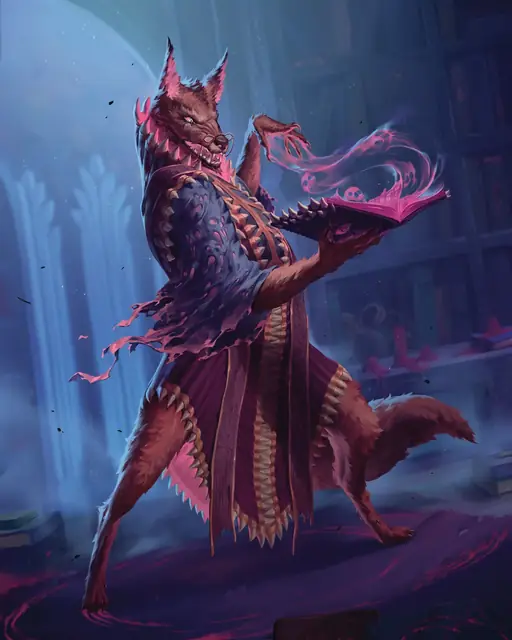

Арканалот
Arcanaloth
Среднее Исчадие (Юголот), Нейтральное Злое

Класс Защиты 18 Инициатива +5 (15)
Хиты 175 (27к8 + 54)
Скорость 30 футов, Полёта 30 футов (парит)
| мод | спас | ||
|---|---|---|---|
| СИЛ | 17 | +3 | +3 |
| ЛОВ | 12 | +1 | +5 |
| ТЕЛ | 14 | +2 | +6 |
| мод | спас | ||
|---|---|---|---|
| ИНТ | 20 | +5 | +9 |
| МДР | 16 | +3 | +7 |
| ХАР | 17 | +3 | +3 |
Сопротивление урону Огонь, Холод, Электричество
Иммунитеты Кислота, Яд; Отравленный, Очарованный
Чувства пассивное Восприятие 17, Истинное зрение 120 футов
Языки Все, Телепатия 120 фт.
Опасность 12 (8 400 опыта; БВ +4)
Особенности
Восстановление исчадия. Когда арканалот умирает за пределами Геенны, его тело превращается в лужу ихора и в тот же миг заново возрождается со всеми Хитами где-то в Геенне.
Сопротивление магии. Арканалот совершает с Преимуществом спасброски против заклинаний и прочих магических эффектов.
Фолиант душ. У арканалота есть магический фолиант. Пока арканалот держит или носит с собой фолиант, он может совершать действие Изгоняющий коготь.
У фолианта КЗ 17; 35 Хитов и Иммунитет к Некротическому, Психическому урону и урону Ядом. Фолиант восстанавливает все свои Хиты в конце каждого хода, но рассыпается в пыль, если его Хиты уменьшаются до 0 или арканалот умирает. Если фолиант уничтожен, арканалот может создать новый по завершении Короткого или Долгого отдыха.
Действия
Мультиатака. Арканалот совершает три атаки Вспышкой силы исчадия. Он может заменить одну из этих атак на атаку Изгоняющим когтём.
Вспышка силы исчадия. Бросок рукопашной или дальнобойной атаки: +9, досягаемость 5 фт. или дистанция 120 фт. Попадание: 31 (4к12 + 5) Некротического урона.
Изгоняющий коготь (требуется Фолиант душ). Бросок рукопашной атаки: +9, досягаемость 5 фт. Попадание: 10 (2к4 + 5) Рубящего урона плюс 19 (3к12) Психического урона. Если цель — существо, оно подвергается воздействию следующего эффекта. Спасбросок Харизмы: Сл 17. Провал: Цель заточена в демиплане внутри Фолианта душ. Пока цель заточена там, она Недееспособна. В конце каждого своего хода цель повторяет спасбросок, освобождаясь из фолианта при успехе. После освобождения цель появляется в покинутом ей пространстве или, если оно занято, в ближайшем незанятом пространстве.
Если цель провалит три спасброска, находясь в демиплане, она будет привязана к фолианту и сможет сбежать, только когда Хиты фолианта уменьшатся до 0.
Сотворение заклинаний. Арканалот сотворяет одно из следующих заклинаний, не нуждаясь в Материальных компонентах (заклинательная характеристика — Интеллект, Сл спасброска заклинаний 17):
Неограниченно: Cмена обличья, Волшебная рука, Обнаружение магии, Опознание, Фокусы
1/день каждое: Обнаружение мыслей, Переносящая дверь, Связь с иным планом, Сокрытие разума
Бонусные действия
Телепортация. Арканалот телепортируется на расстояние до 30 футов в видимое им незанятое пространство.
Реакции
Контрзаклинание. Арканалот сотворяет Контрзаклинание в ответ на условие заклинания (заклинательная характеристика — та же, что для Сотворения заклинаний).
Бонус мастерства +4
Среда обитания Нижние планы
Сокровища Магические
Арканалот
Юголот магических манипуляций
Несмотря на то, что все юголоты — Исчадия, воплощающие в себе злобу и жадность, арканалоты пользуются своим солидным интеллектом для коллекционирования секретов и их спекуляцией. Благодаря приобретённым знаниям они заманивают в ловушку множество жертв и мелких злодеев, обольщая врагов ложными обещаниями и могущественной магией.
Арканалоты мастерски владеют магией и часто маскируются с её помощью. Хотя они могут постоять за себя с помощью своей мистической силы, просто изгнав противников на страницы магических фолиантов, арканалоты предпочитают пользоваться услугами других юголотов и волшебных помощников.